A series of case studies on how design can be used to protect against misuse, privacy intrusions, and the erosion of agency
use your arrow keys to navigate
A primer
Defensive design is a practice of design that anticipates and minimizes room for a product's misuse. Usually, defensive design is for "mistake-proofing" -- consider 3-pronged plugs and sockets, SIM cards, or USBs. These all are designed in a way that they're physically impossible to install in the wrong direction.
Design is a problem-solving practice. It's one that can This project covers a series of case studies exploring the question: how might we intentionally be our own red teams? How might we design protectively and proactively to consider potential unintended consequences that technology might enable? While this certainly isn't exhaustive, this project aims to build a repository of case studies to help us identify design patterns in the wild and think of new ways to design protectively.
Let's start by learning about Poka-Yoke.
It's a mistake-proofing method developed by engineer Shigeo Shingo at Toyota to reduce errors made on the manufacturing line.
While Poka-Yoke's methods are broad and far-reaching, we'll focus on one method in particular.
The Contact Method: Use physical attributes of something (like its color, size, weight, shape) to prevent misuse. The examples from the last slide, like the electrical socket, follow this.
If we broaden Poka-Yoke's objectives, how might we use similar defensive methods to protect against the often squishier and more nebulous ways technology can lead to harmful outcomes?
Let's consider the invention of the camera. Before the advent of digital imagers for cameras, photography required long exposures of an image onto chemically treated film. Because exposures could take several minutes (even hours), the subject of a photograph needed to stay still for long periods of time, making the photography of passing strangers in public virtually impossible. With digital cameras, exposure was instantaneous.
Portable cameras made capturing private persons easier, and enabled the circulation of private information without consent. Justices Warren and Brandeis spoke about this in The Right to Privacy.
Camcorders made these visual records even richer. But without the option to mute video recordings as they were taken, they became tools that could potentially capture private conversations in the public realm.
Now, apps like FindFace, Clearview, and PimEyes build upon modern smartphones and their cameras. They apply face recognition to large swathes of images, which can be taken in public spaces without the consent of the photograph’s subject. Even more worrying, the anonymity of people in public spaces is now called into question.
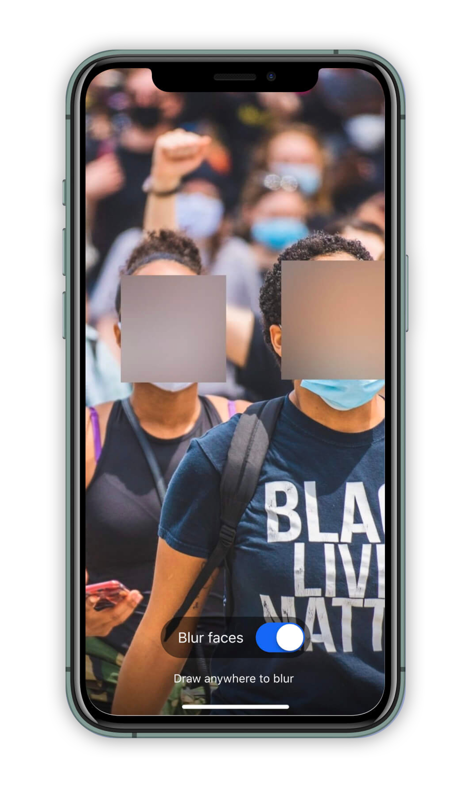
This is not to say that digital cameras are bad. Instead, we must think critically about how we can safeguard our emergent technology from adverse consequences that cascade as technology continues to improve.
Signal, for example, offers to blur faces in images to combat the risk of the identification of protesters by law enforcement -- sometimes, there are ways product design can mitigate the risk of civil rights abuses and privacy intrusions.
Making conscious decisions that can future-proof our systems against difficult situations in the future is at the center of designing a sustainable system.
Part 1
Surveillance
designing for privacy
Bentham's panopticon was created to maximize surveillance and minimize inmate privacy. Let's dig into how this was designed, and how we can consciensiously design to instead maximize agency and privacy for users of technology.
The panopticon is the classical example of a design that prioritizes surveillance. Designed by philosopher Jeremy Bentham, it's a prison design that seeks to answer: how might one create opportunities for the maximum possible surveillance with the fewest security guards?
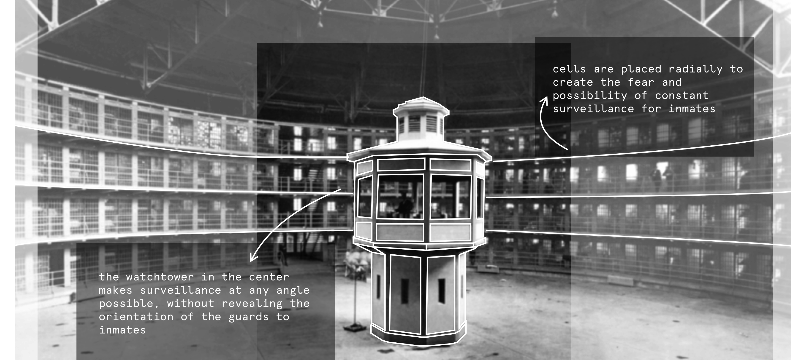
Bentham described the design as a “new mode of obtaining power of mind over mind.” The design was intended to be used as a blueprint for prisons (which he funded the development of in London during his lifetime), with the goal of also overseeing prison labor. Professor Simone Browne, in Dark Matters: On the Surveillance of Blackness, writes of the similarities between Bentham’s panopticon and the design of ships carrying enslaved people. The panopticon is a physical manifestation of implicit structural violence, racism, and exploitation.
Since Bentham’s initial thought experiment, the panopticon has been adopted by several prisons around the world (including a few in the US). By 2006 in Amsterdam, Lelystad Prison was called the “first digital panopticon prison,” with inmates tracked by electronic tags and a low guard-to-inmate ratio. How might we protect against this manipulation through design?
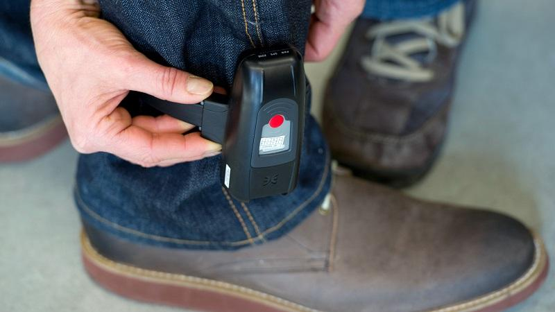
Design can be deployed to surveil people (by harvesting their information passively, for example) but can also be used to help people understand how exposed their activity might lead them to be. Surveillance and its potential privacy harms are often discrete, especially when they lack explicit consent mechanisms. Consider Cookie Banners and Terms and Conditions - is the choice architecture here really presenting options to users?
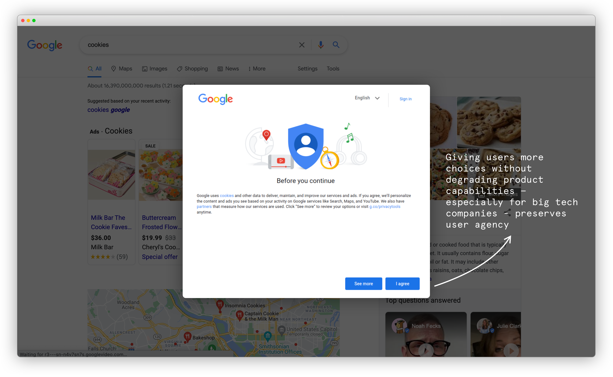
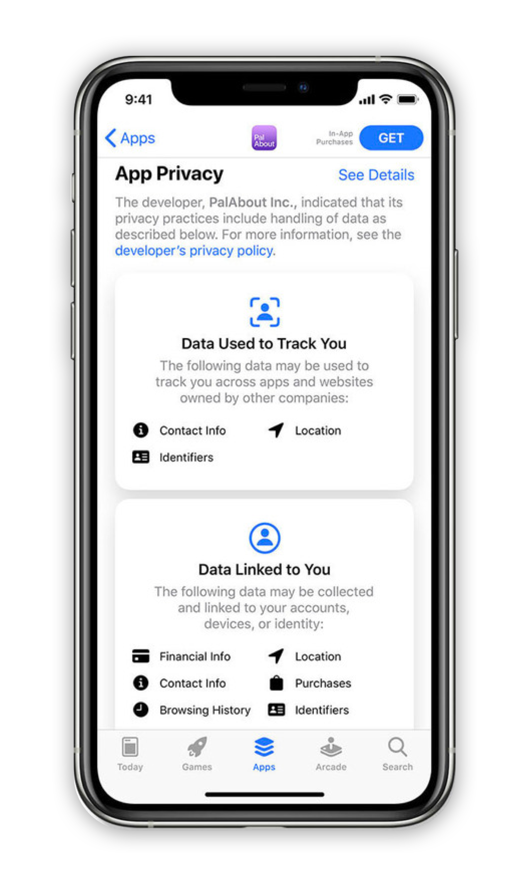
Apple’s “Nutrition” privacy labels instead expose this information in a legible way, before user consent is collected. Though they are not without their own flaws, these labels make understanding this data significantly easier.
Though communicating this information is one of the purposes of Terms and Conditions and Privacy Policies, they've become so protective against litigation that the language often feels hard to interpret - these privacy labels are a promising approach towards communicating how exactly our data is processed by a data broker, and give users agency to decide if this seems reasonable or not.
The Legal Design Lab at Stanford is exploring this particular issue deeply by bringing human-centered approaches into the delivery of legal services.
By creating a standard format for how this information is displayed, this design also allows users to compare practices across apps to contextualize this information. If this information is accurate and can be enforced by hardware and software gates, users can much more easily understand the ways in which their data is being collected, stored, and used.
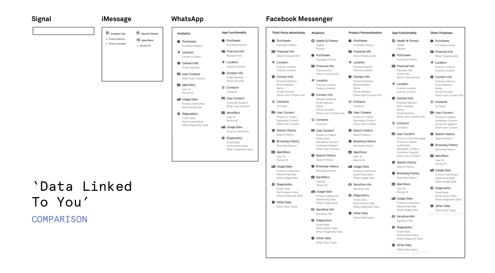
Another model that can be used to help someone understand how they might be watched is by sharing their data (and the inferences made on their data) with them.
Facebook’s View as feature and Lunchclub's self profile viewer capture this intention -
Anne Cavoukian's framework for Privacy By Design and the Fair Information Practice Principles (FIPPs) are excellent resources to continue along!
Part 2
Misrepresentation
designing for clarity
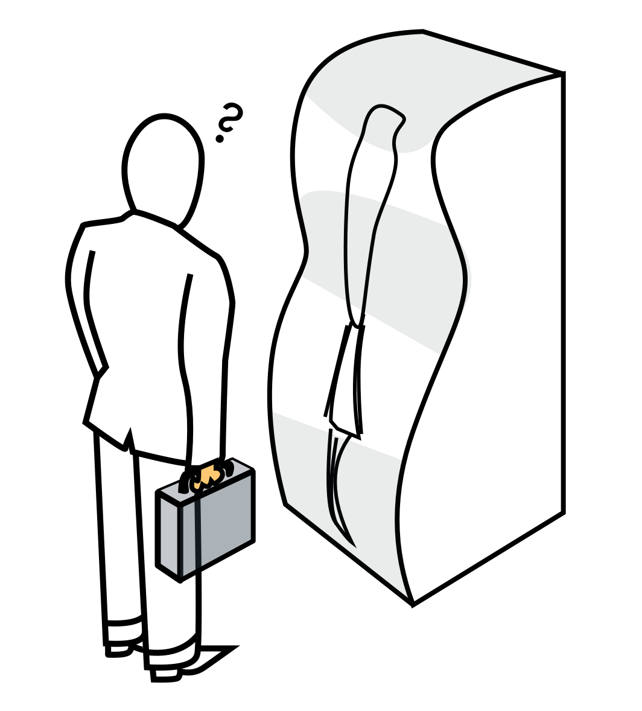
aka how to avoid designing a digital funhouse...
For our physical analog here, we'll consider the funhouse. When you know you're about to enter a space where distortion is the norm, the experience of a funhouse might actually be fun. But what if you didn't know that what you're seeing was misrepresented? In this section, let's think about how we can avoid building a Digital Funhouse.
You might remember Steve Harvey going viral in 2015 for announcing the wrong winner for Miss Universe. To his credit, the card he was reading was awfully hard to parse quickly - and for someone under pressure on a big stage, missing the fine print might be easy to do. Good information architecture and an intentional use of visual hierarchy can start to correct for misunderstandings like this.
Can you think of other times when users might be emotional or stressed while using a service? Government services, legal services, taxes, leases... there are many times we might encounter a stressful decision point where the service architecture could absolutely benefit from visual design, not for aesthetics, but for function.
Defaults in products are a powerful way to sway the way a user might make decisions. While the Default Effect is certainly relevant to this project, here, we're looking at how a defaultpresented inaccurate information. MaxMind, an IP address mapping service, is used by law enforcement and consumers to track devices to a location. When MaxMind can't provide a granular location for an IP address (and even those are estimates), it would instead provide a more general estimate (a city, state or country) -- but with full GPS precision, which sometimes meant estimating an IP at the dead center of the USA.
"Snapchat dysmorphia" has come to capture the body dysmorphia users feel after comparing themselves to their filtered faces. Snapchat beauty filters not only promote unrealistic beauty ideals, but distort faces to specifically promote white beauty standards -- these filters distort face shapes to be slimmer, enlarge eyes, contour and slim nose shapes, and lighten dark skin tones. These filters set an uninclusive definition for beauty in a way that disproportionately creates this dysmorphia among those without white features, also cited as the reason many seek plastic surgery to resemble their filtered selfies.
Sometimes, misrepresentation comes from data vis choices. In Georgia, a COVID-19 chart on the Department of Public Health's website implied that the number of new confirmed cases in the counties with the most infections had dropped every day for the previous two weeks. Despite the consistent downward trajectory, the data was muddled with the fact that in it's x-axis, dates were not listed chronologically so that counties would appear in the same position on the x axis consistently. Sorting mistakes like these critically change how we interpret data.
Design is an act of choosing how someone experiences something - when it's information, think about why you are presenting things the way you do, and what your assumptions are.
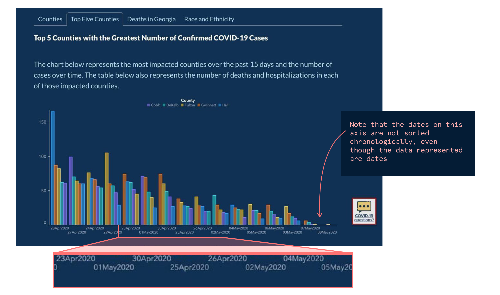
Edward Tufte's principles for Data Visualization are an excellent framework to check that data is presented legibly and with appropriate context, and the Gestalt principles help us frame the ways people interpret visual information. If you design in data dense environments, or are creating anything that presents information to someone, consider integrating these into your process!
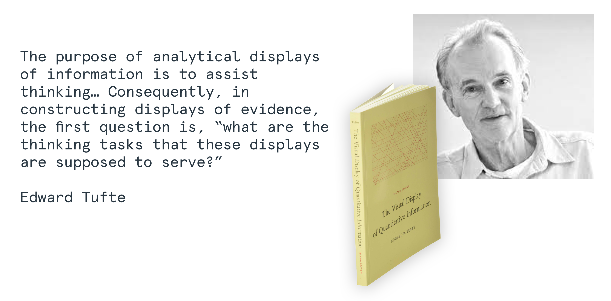
a brief intermission
Casino Design
Learning from Las Vegas
At this detour, we're going to go over two eras of casino design to set us up for the next to parts...
Gaming design
Bill Friedman was a foundational thinker in strategic casino design - in his seminal text book, he says: "The only relevant consideration for casino design are these: What percentage of visitors gamble? What percentage return to gamble? Nothing else matters."
Friedman's “Gaming design” philosophy held many principles to its core. Here are a few...
Principle 4: The Maze Layout Beats Long, Wide, Straight Passageways and Aisles
Principle 8: Low Ceilings Beat High Ceilings
Principle 9: Gambling Equipment As the Décor Beats Impressive and Memorable Decorations
Principle 11: Pathways Emphasizing the Gambling Equipment Beat the Yellow Brick Road
Source: Stripping Las Vegas: A Contextual Review of Casino Resort Architecture
To Friedman, capturing casino-goers into tight spaces by making it easy to find a casino and difficult to leave one was a central concept to a casino design that maximizes profit.
In our reading of this case study, we will challenge ourselves to think more expansively: how might we increase user agency instead of limit it? And how can the design of space, whether physical or digital, regulate the way a person makes decisions in that space?
Playground design
Of course, casino design has evolved since the 2000s - Roger Thomas and Steve Wynn, while designing for the Belagio, challenged Friedman's assumptions about how to best maximize profit. They predicted that if people were more relaxed, they would be willing to place riskier bets. Lowering their psychological barrier to gambling could produce more efficient gains for a casino. Instead of trapping people, their casinos embraced “Playground design” and “evo-catuer” — they stimulate the senses.
Here are some properties of their design paradigm:
Provide ample natural light
Give people excellent wayfinding - a feeling of agency
Use high ceilings to create the feeling openness
Glamorous lobby spaces with sculptures excite the senses
Maximize comfort
Instead of entrapping guests in a web of buzzing slot machines, provide clear sightlines to where gamblers want to head next (but make the right choice obvious)
The designs also speak to guests who might not typically gamble, as their luxurious decor acts as a "type of anesthesia" to numb guests of their significant losses.
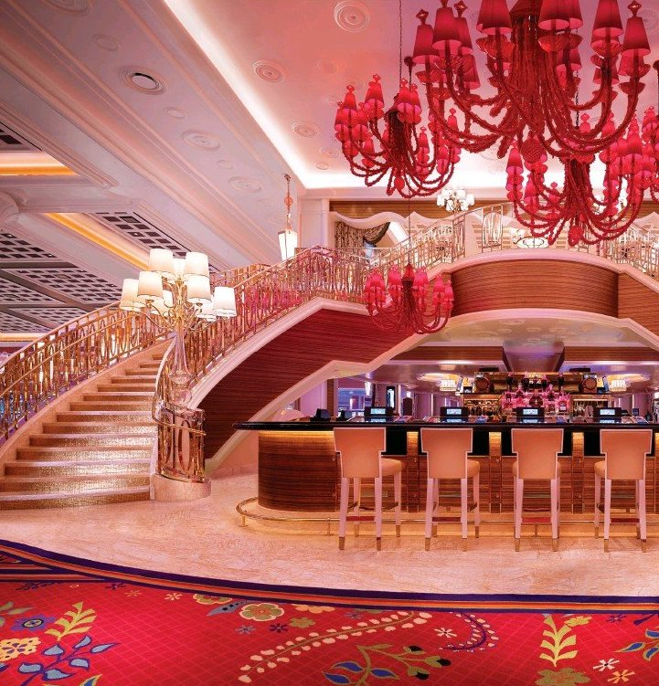
Today, "playground design" seems to be the winning strategy (even this paper confirms it.) But there are still many parallels to both design strategies that are still relevant in the digital realm - we'll unpack those in the next two sections.
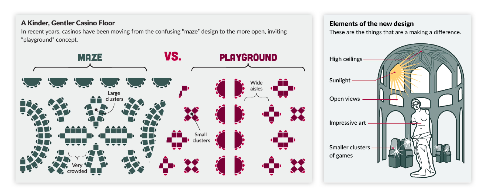
Part 3
Misdirection
designing for orientation
Information asymmetry can lead users down paths they do not intend to or dont fully understand. How can we design to protect people from this?
One dark pattern from Friedman's conception (the first kind) of casino design was trapping and building mazes to disorient people, and encourage them to stay within one section of a casino. Removing sightlines or the possibility of leaving encouraged lingering - this pattern is a common digital dark pattern. Let's start with e-commerce checkout flows. Whether it's nudges to upgrade, purchase more, choose preferences in non-intuitive ways (with more expensive defaults), or messages that pressure you about scarcity, you've likely experienced some form of these. Confirmsharming, visual interference, trick questions and pressured selling cover some of misdirection as a dark pattern.
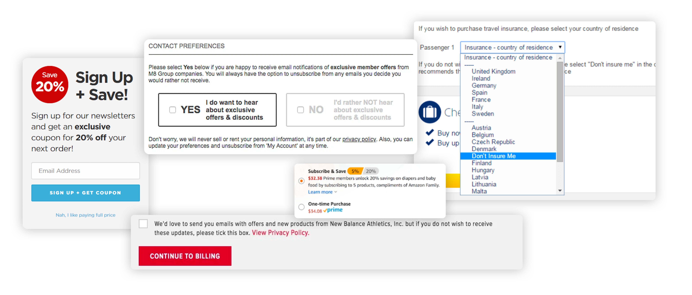
Of course, there are many more examples of this pattern and others, like obstruction. Famously, TurboTax's Free tax services which are legally required as an option for low income individuals is hard to discover. There are many points in the discovery workflow that lead to the paid basic version of TurboTax's services, and access points to the truly free tier are not listed or easily discoverable on search engines.
Native advertising leads to similar disorientation (and this overlaps heavily with the misrepresentation section) -- it's the use of embedding advertising in a format that seems native, like an article with a small (and often, easy to miss) advertising label, that mirrors the narrative tone and visual presence of other actual articles. Because they're presented as options among other articles, people may not be aware that they're being led to biased ads.
Dark patterns cover much more than misdirection - here are some major categories of Dark Patterns assembled by Jamie Luguri and Lior Jacob Strahilevitz to watch out for as you design with user agency in mind. Are you inadvertedly using any of these patterns, and if you are, do they serve a purpose that empowers better user outcomes?
Social proof Activity messages (misleading notice that others are purchasing, etc) • Testimonials (misleaing positive statements) • Price
Forced action Address book leeching • Privacy Zuckering (tricking people into sharing personal info) • Gamification • Forced Registration
Scarcity Low stock message • High demand message
Urgency Countdown timer • Limited time messages
Source: Shining a light on dark patterns (doi:10.1093/jla/laaa006)
Part 4
Manipulation + Friction
designing for awareness and control
Instead of trapping, this philosophy depends on lowering a person's psychological barriers to make a decision they otherwise may not have.
In Roger Thomas and Steve Wynn's "playground design," instead of creating friction, design is strategically used to reduce friction for decisions a system prefers a user to make.
Fanduel and DraftKings, sports gambling services, make a users' first bet free and match deposits - by making the first bets free, users are more likely to continue betting, where any windfall is a source of encouragement and any loss feels negligible because it was free (making you more likely to continue betting).
Netflix's autoplay feature, Youtube's autoplay, and the endless scrolling that many social media services use perform a similar function. By making it easier to continue accessing more content, these seemingly bottomless websites make it increasingly easy to continue spending time on them.
Of course, it's worth noting that Netflix eventually check's in on you to ask if you're still watching and Instagram now let's you know that "You're all caught up." These nudges are healthy ways to encourage users to decide to continue spending time consuming, with intention and pause.
NextDoor is an app that allows neighborhoods to connect online. Though its intentions are to bring communities together, NextDoor's incident reports enabled racial profiling in several communities where black individuals were identified as threats merely for existing in communities. Incident reports previously didn't require supplementary information (many reports would only cite a person's race), but since have been updated to require specific and additional information if race is cited. More recently, NextDoor released features to detect harmful language and warn users about this. Clearly, these problems are not caused by Nextdoor -- they indicate the systemic failures of racist neighborhoods. But building features that enable users to choose and identify those who they don't think belong near their homes enables cascading harmful effects.
Building more protective features for incident reporting will not solve racism, but will reduce where it is allowed to flourish.
Fortunately, introducing manual and algorithmic "speed bumps" is a design practice we are already very familiar with. For heavy and often irreversible actions like deletion, many design patterns have users confirm these actions before they are completed. Expanding where these patterns are applicable, not only for technical actions, but social ones can help us design defensively to protect user agency and encourage users to make decisions as active participants.